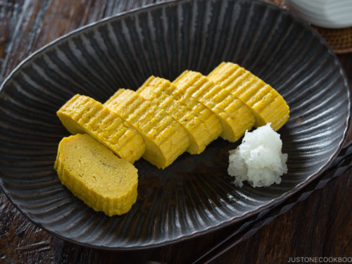

Tamagoyaki (Japanese Rolled Omelette)
Recipe by Chef Jackie

Tamagoyaki is sweet and savory Japanese Rolled Omelette flavored with dashi and enjoyed for breakfast or as a side dish in your bento lunch.
Tamagoyaki is slightly sweet and seasoned with soy sauce, mirin, and dashi stock. It's a favorite in bento boxes and also makes an easy Japanese appetizer. Serve with shredded daikon and soy sauce for dipping.
Ingredients
- 4 eggs
- 4 Tbsp prepared dashi stock
- 1 Tbsp white sugar
- 1 tsp mirin (Japanese sweet wine)
- 1/2 tsp soy sauce
- 1/2 Tbsp vegetable oil
Directions
- Whisk eggs, dashi stock, sugar, mirin, and soy sauce together in a bowl.
- Heat 1/3 of the oil in a large nonstick skillet over medium-high heat. Add about 1/3 of egg mixture and quickly swirl the pan to evenly cover the bottom. Start rolling up omelette from one side to the other as soon as it is set.
- Keep roll to one side, then add another 1/3 of the oil to the skillet and another 1/3 of egg. Swirl the pan, ensuring the entire bottom is covered, including around and underneath first roll. Cook until set. Roll up from the side containing first roll, so that is now at the center.
- Repeat the process with remaining oil and egg. Transfer rolled omelette to a bamboo rolling mat. Roll up tightly and allow to cool for a few minutes.
- Unwrap omelette and slice into 6 pieces. Serve warm or cold.
Chef's Note
For serious Japanese home cooks, you can buy a tamagoyaki frying pan. It's a rectangular nonstick frying pan used specifically for making this omelette. The pan is available to order online or in Japanese markets.